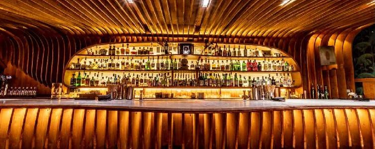
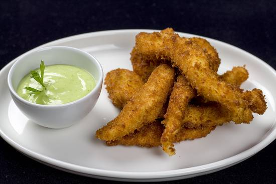
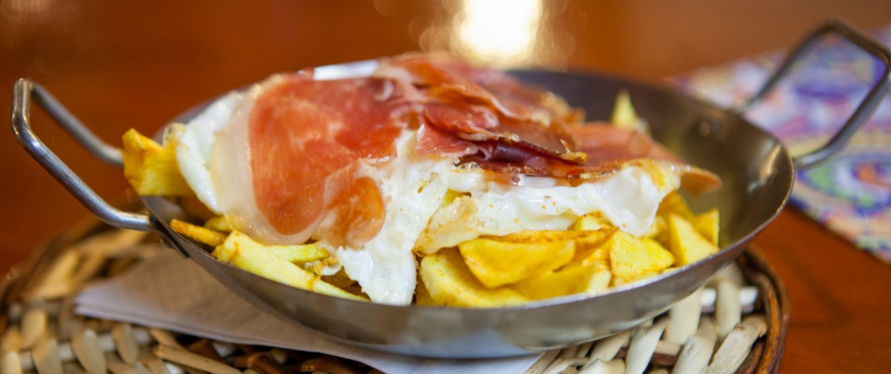

¡Bienvenidos al restaurante "Sebran"! Me llamo Chef Juan y soy el corazón culinario detrás de esta experiencia gastronómica que estamos a punto de compartir juntos. Permítanme llevarlos en un viaje de sabores, aromas y texturas que despertarán sus sentidos y los transportarán a un mundo donde la comida es más que solo sustento, es una experiencia enriquecedora y emocionante.
En "combinados Sebran", nuestra filosofía es simple pero profunda: creemos en la magia que sucede cuando los ingredientes frescos se combinan con pasión y creatividad. Cada plato que sale de nuestra cocina lleva consigo el amor y la dedicación que ponemos en cada preparación. Desde la selección meticulosa de los productos hasta el último toque de sazón, todo está diseñado para ofrecerles una experiencia culinaria que dejará una impresión duradera en sus paladares.
Destaca el plato estrella "huevos rotos con jamón" y otras opciones como la "pechuga de pollo con ensalada y patatas fritas". Además, ofrece una carta de acompañamientos tentadores. El ambiente acogedor y vibrante busca convertir cada bocado en una experiencia de alegría y conexión. El equipo se esfuerza por hacer que la visita sea inolvidable, combinando la pasión por la buena comida con la calidez de la hospitalidad. En "combinados Sebran", no solo se alimentan los cuerpos, sino también las almas.
